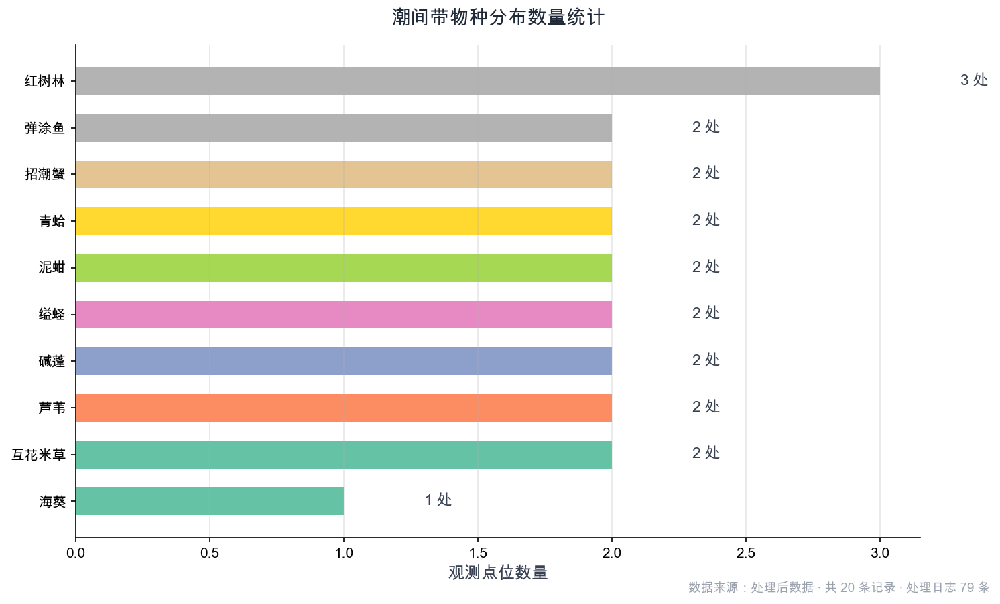
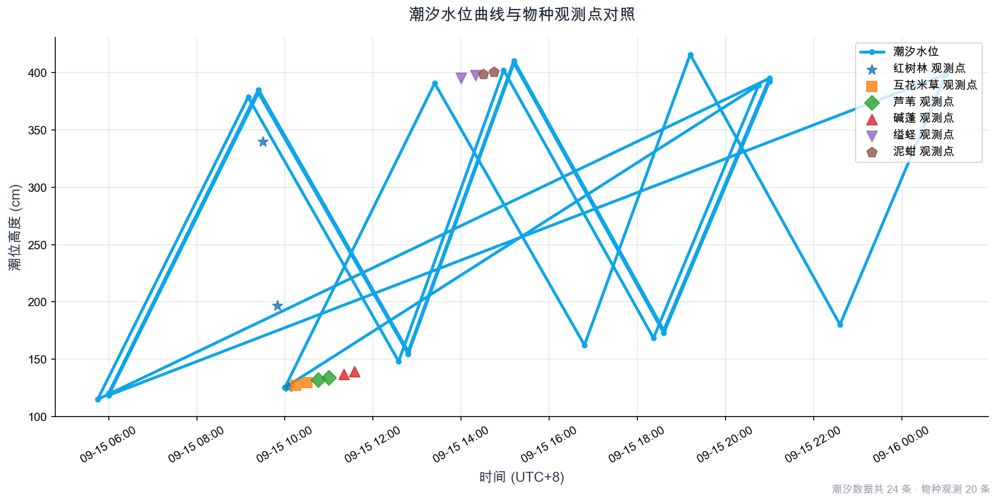
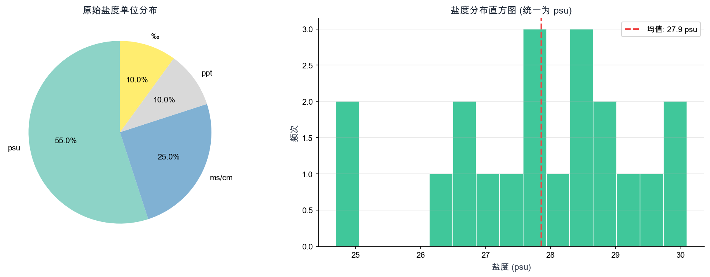
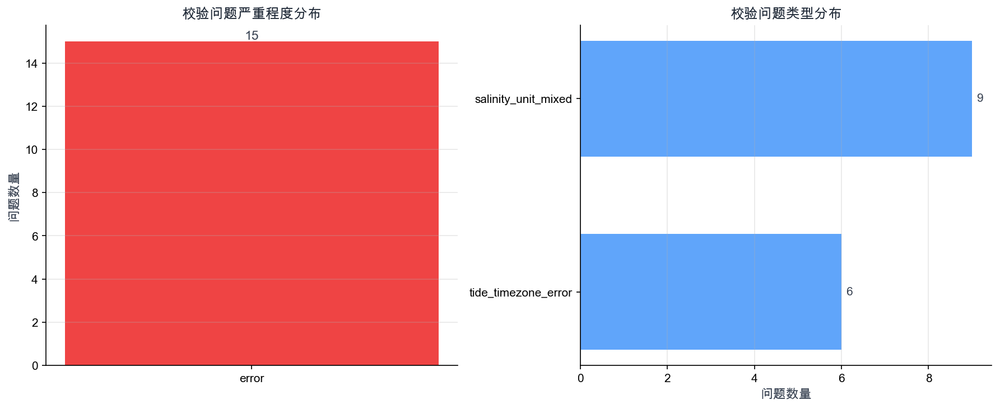

注：以上文字可直接复制转发，数据来源于本次处理的 20 条物种观测记录、24 条潮汐数据、20 条盐度数据。
本次共处理 79 条处理记录，所有地图、图表、报告数据均来自同一批处理结果， 可通过记录ID回溯到原始数据和处理意见。
点击地图上的标记点可查看详细信息和处理记录ID。
暂无地图




| 问题ID | 严重程度 | 问题类型 | 来源 | 描述 |
|---|---|---|---|---|
| ISS-7F33C14C | 错误 | salinity_unit_mixed | salinity 第 1 行 | 盐度单位混用：检测到 {'psu', 'ms/cm', 'ppt', '‰'}，海事处要求统一使用 ... |
| ISS-FF6E9F45 | 错误 | salinity_unit_mixed | salinity 第 2 行 | 盐度单位混用：检测到 {'psu', 'ms/cm', 'ppt', '‰'}，海事处要求统一使用 ... |
| ISS-318FE346 | 错误 | salinity_unit_mixed | salinity 第 5 行 | 盐度单位混用：检测到 {'psu', 'ms/cm', 'ppt', '‰'}，海事处要求统一使用 ... |
| ISS-5BBD87B8 | 错误 | salinity_unit_mixed | salinity 第 6 行 | 盐度单位混用：检测到 {'psu', 'ms/cm', 'ppt', '‰'}，海事处要求统一使用 ... |
| ISS-037CB717 | 错误 | salinity_unit_mixed | salinity 第 7 行 | 盐度单位混用：检测到 {'psu', 'ms/cm', 'ppt', '‰'}，海事处要求统一使用 ... |
| ISS-E5923074 | 错误 | salinity_unit_mixed | salinity 第 8 行 | 盐度单位混用：检测到 {'psu', 'ms/cm', 'ppt', '‰'}，海事处要求统一使用 ... |
| ISS-5187F463 | 错误 | salinity_unit_mixed | salinity 第 9 行 | 盐度单位混用：检测到 {'psu', 'ms/cm', 'ppt', '‰'}，海事处要求统一使用 ... |
| ISS-322169CC | 错误 | salinity_unit_mixed | salinity 第 12 行 | 盐度单位混用：检测到 {'psu', 'ms/cm', 'ppt', '‰'}，海事处要求统一使用 ... |
| ISS-9DD7EF32 | 错误 | salinity_unit_mixed | salinity 第 13 行 | 盐度单位混用：检测到 {'psu', 'ms/cm', 'ppt', '‰'}，海事处要求统一使用 ... |
| ISS-35DCC458 | 错误 | tide_timezone_error | tide 第 18 行 | 潮位时区 'PST' 不标准。中国沿岸潮汐表应使用 UTC+8（北京时间）。若实际是其他时区，会导致... |
| ISS-289BEEAB | 错误 | tide_timezone_error | tide 第 19 行 | 潮位时区 'PST' 不标准。中国沿岸潮汐表应使用 UTC+8（北京时间）。若实际是其他时区，会导致... |
| ISS-115F7F2B | 错误 | tide_timezone_error | tide 第 20 行 | 潮位时区 'PST' 不标准。中国沿岸潮汐表应使用 UTC+8（北京时间）。若实际是其他时区，会导致... |
| ISS-A04269D8 | 错误 | tide_timezone_error | tide 第 21 行 | 潮位时区 'PST' 不标准。中国沿岸潮汐表应使用 UTC+8（北京时间）。若实际是其他时区，会导致... |
| ISS-EF1ACF33 | 错误 | tide_timezone_error | tide 第 22 行 | 潮位时区 'PST' 不标准。中国沿岸潮汐表应使用 UTC+8（北京时间）。若实际是其他时区，会导致... |
| ISS-0711E6CD | 错误 | tide_timezone_error | tide 第 23 行 | 潮位时区 'PST' 不标准。中国沿岸潮汐表应使用 UTC+8（北京时间）。若实际是其他时区，会导致... |
以问题 ISS-35DCC458 为例：
1. 该问题来自 tide 数据第 18 行
2. 对应处理记录：REC-AB964599、REC-38825131
3. 原始值：PST
4. 期望：UTC+8 或 Asia/Shanghai
5. 处理意见：潮位时区 'PST' 不标准。中国沿岸潮汐表应使用 UTC+8（北京时间）。若实际是其他时区，会导致潮高与物种观测时间对不上。
6. 可直接使用 python cli.py review --issue-id ISS-35DCC458 进入复核模式修正
python cli.py review --issue-id 问题ID
或
python cli.py review --record-id 记录ID
，无需重新导入全部数据。
以下为最近 20 条处理记录，完整记录见审计日志 JSON 文件。
| 记录ID | 操作 | 来源类型 | 原因 | 时间 |
|---|---|---|---|---|
| REC-1022CBA1 | link_tide_data | species | 根据观测时间 2025-09-15 15:15 内插对应潮位... | 23:13:10 |
| REC-10628DB9 | link_tide_data | species | 根据观测时间 2025-09-15 10:05 内插对应潮位... | 23:13:10 |
| REC-4E3C1613 | link_tide_data | species | 根据观测时间 2025-09-15 13:45 内插对应潮位... | 23:13:10 |
| REC-35E83DCF | link_tide_data | species | 根据观测时间 2025-09-15 12:00 内插对应潮位... | 23:13:10 |
| REC-9417755B | link_tide_data | species | 根据观测时间 2025-09-15 14:45 内插对应潮位... | 23:13:10 |
| REC-35F318E9 | link_tide_data | species | 根据观测时间 2025-09-15 14:20 内插对应潮位... | 23:13:10 |
| REC-033D037F | link_tide_data | species | 根据观测时间 2025-09-15 11:35 内插对应潮位... | 23:13:10 |
| REC-A918D96A | link_tide_data | species | 根据观测时间 2025-09-15 11:00 内插对应潮位... | 23:13:10 |
| REC-B749DB50 | link_tide_data | species | 根据观测时间 2025-09-15 10:30 内插对应潮位... | 23:13:10 |
| REC-D917A5F7 | link_tide_data | species | 根据观测时间 2025-09-15 09:50 内插对应潮位... | 23:13:10 |
| REC-7BDED9EE | link_tide_data | species | 根据观测时间 2025-09-15 15:30 内插对应潮位... | 23:13:10 |
| REC-6971D5BB | link_tide_data | species | 根据观测时间 2025-09-15 13:30 内插对应潮位... | 23:13:10 |
| REC-FC384A7A | link_tide_data | species | 根据观测时间 2025-09-15 11:45 内插对应潮位... | 23:13:10 |
| REC-3E77E567 | link_tide_data | species | 根据观测时间 2025-09-15 15:00 内插对应潮位... | 23:13:10 |
| REC-A926E047 | link_tide_data | species | 根据观测时间 2025-09-15 14:30 内插对应潮位... | 23:13:10 |
| REC-5CD0CAE5 | link_tide_data | species | 根据观测时间 2025-09-15 14:00 内插对应潮位... | 23:13:10 |
| REC-31C0FF62 | link_tide_data | species | 根据观测时间 2025-09-15 11:20 内插对应潮位... | 23:13:10 |
| REC-3E7860DD | link_tide_data | species | 根据观测时间 2025-09-15 10:45 内插对应潮位... | 23:13:10 |
| REC-C1FAF4F2 | link_tide_data | species | 根据观测时间 2025-09-15 10:15 内插对应潮位... | 23:13:10 |
| REC-632B116E | link_tide_data | species | 根据观测时间 2025-09-15 09:30 内插对应潮位... | 23:13:10 |
共 79 条处理记录 · 显示最近 20 条